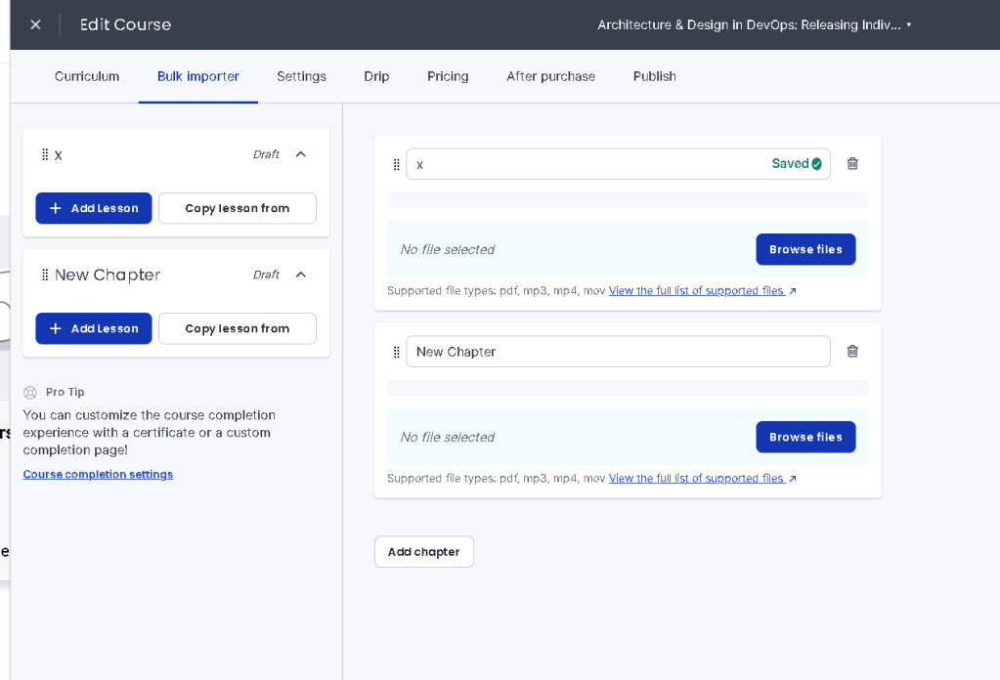
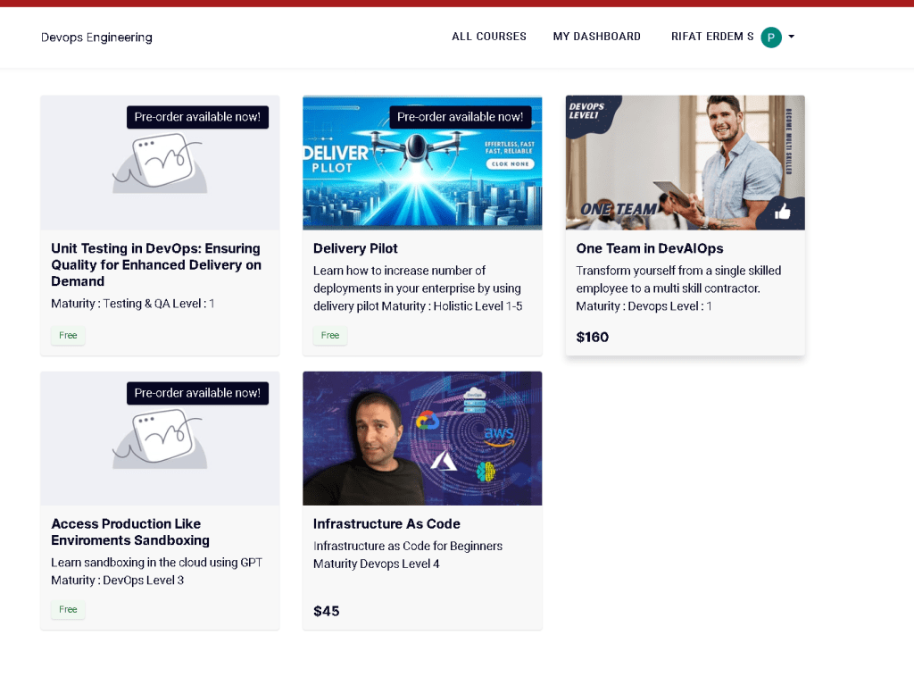
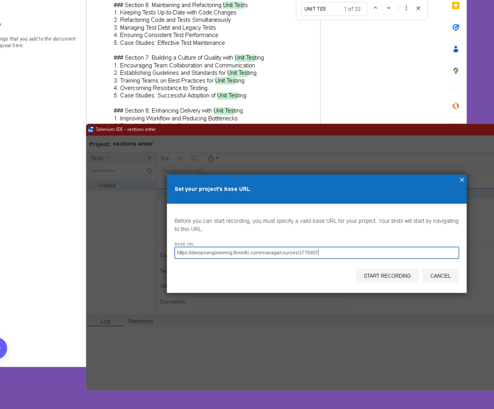
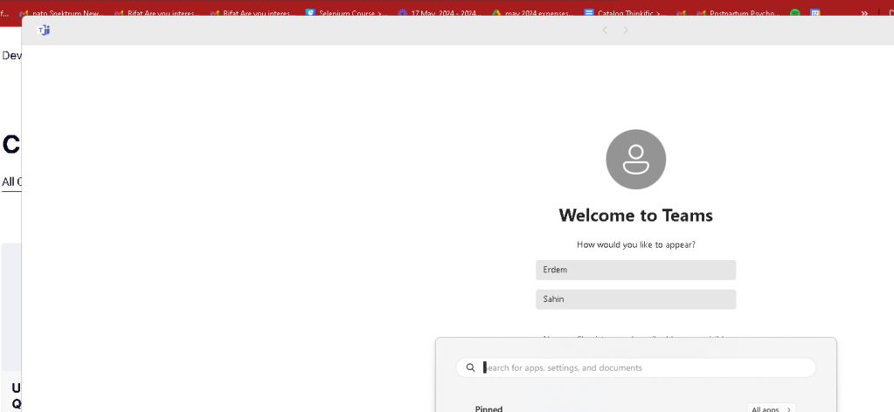

how long to create the index for one course
60 minutes > for this
Training Title:
"Unit Testing in DevOps: Ensuring Quality for Enhanced Delivery on Demand"[ok]
Section 1: Introduction to DevOps and Unit Testing
-
Understanding DevOps Principles
-
The Importance of Testing in DevOps
-
What is Unit Testing?
-
Benefits of Unit Testing for Delivery
-
Course Objectives and Structure
Section 2: Fundamentals of Unit Testing
-
Key Concepts in Unit Testing
-
Difference Between Unit Testing and Other Testing Types
-
Writing Effective Unit Tests
-
Common Challenges in Unit Testing
-
Best Practices for Unit Testing
Section 3: Setting Up Your Unit Testing Environment
-
Choosing the Right Tools and Frameworks
-
Installing and Configuring Unit Testing Tools
-
Integrating Unit Testing with Version Control Systems
-
Setting Up Continuous Integration for Unit Tests
-
Best Practices for Environment Setup
Section 4: Writing and Running Unit Tests
-
Structuring Unit Tests for Readability and Maintainability
-
Writing Test Cases for Different Scenarios
-
Executing Unit Tests Locally
-
Automating Unit Tests in CI/CD Pipelines
-
Analyzing Test Results and Coverage
Section 5: Tools and Frameworks for Unit Testing
-
Overview of Popular Unit Testing Tools (e.g., JUnit, NUnit, Mocha)
-
Integrating Unit Testing Tools with DevOps Pipelines
-
Using Mocking and Stubbing in Unit Tests
-
Best Practices for Tool Configuration
-
Troubleshooting Common Issues
Section 6: Maintaining and Refactoring Unit Tests
-
Keeping Tests Up-to-Date with Code Changes
-
Refactoring Code and Tests Simultaneously
-
Managing Test Debt and Legacy Tests
-
Ensuring Consistent Test Performance
-
Case Studies: Effective Test Maintenance
Section 7: Building a Culture of Quality with Unit Testing
-
Encouraging Team Collaboration and Communication
-
Establishing Guidelines and Standards for Unit Testing
-
Training Teams on Best Practices for Unit Testing
-
Overcoming Resistance to Testing
-
Case Studies: Successful Adoption of Unit Testing
Section 8: Enhancing Delivery with Unit Testing
-
Improving Workflow and Reducing Bottlenecks
-
Ensuring High-Quality Code
-
Accelerating Delivery Times with Automated Tests
-
Increasing Team Productivity and Morale
-
Real-World Examples of Enhanced Delivery with Unit Testing
Section 9: Future Trends and Career Opportunities in DevOps and Testing
-
Emerging Trends in Unit Testing and DevOps
-
Career Paths in DevOps and Quality Assurance
-
Skills and Certifications Required
-
Building a Professional Network
-
Resources for Continuous Learning and Development
Conclusion and Next Steps
-
Recap of Key Learnings
-
Applying Unit Testing Techniques in Real Projects
-
Further Reading and Educational Resources
-
Engaging with the DevOps and QA Community
-
Final Q&A and Feedback
This course structure is designed to help beginners understand and apply effective unit testing techniques within DevOps practices to ensure quality and enhance delivery on demand.
**Mitigation **
Use selenium todo this
48 courses >>>> 48 hours to complete to add it
less errors as Erdem might have had copy paste errors
use 2 machines to do this dont touch the machine for the automation > mac mini!Chrome and selenium
Bulk importer really does not help that much

Also the ui in the thinkific is slow a monolith application to sell courses!

Catalog to create > https://docs.google.com/document/d/1I4nbfUWkZXwIm-e2Lou9OqMsyK8QLPei--oVVn-s7C4/edit
Cookie management why you need it

empty process

Imported from rifaterdemsahin.com · 2024